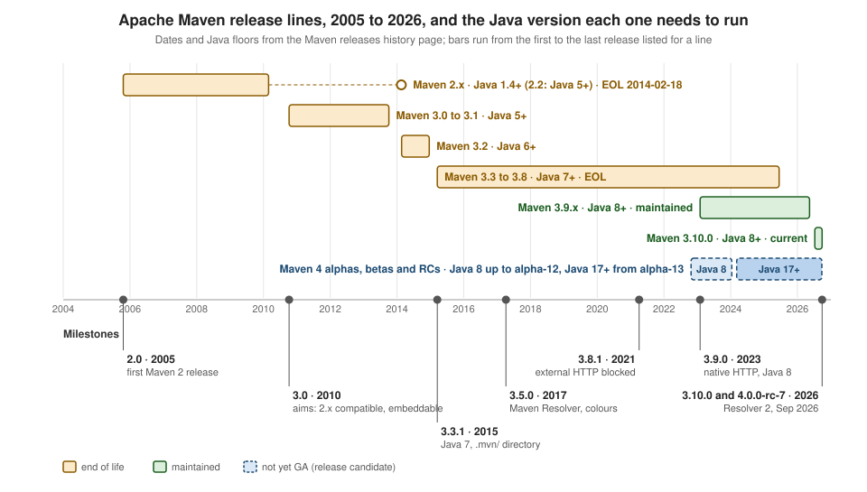

Maven: Versions & Release History
|
This content was generated with the assistance of AI and should be verified against the official documentation before being relied on in production. |
This page is written against Apache Maven 3.10.0 (released on 27 September 2026), with 3.9.16 (13 May 2026) where it differs and
Maven 4.0.0-rc-7 (24 September 2026), a release candidate, where named. Every example marked as run was executed on JDK 26 on
2026-10-16, on macOS, in a scratch directory; output that comes from a run is shown as printed, with the long scratch path
shortened to <scratch> and the home directory to <home>. The three Maven installations were the ones described in
Installation. Dates and Java floors were read from the Maven
releases history page and the release notes on the same day, and the newest versions on Maven Central were checked against them.
Maven’s versioning is part of its contract with plugin authors and with users who keep a build for ten years. The number of the core tells you how much can break when you upgrade: a patch release (3.9.15 to 3.9.16) fixes bugs, a minor release (3.9 to 3.10) may change defaults and make warnings into errors, and a major release (3 to 4) changes the model and the plugin API. This page puts the releases on one timeline, says which Java each needs, lists what changed in the releases you are most likely to cross, and turns the 3.9-to-3.10 changes into a checklist, each item backed by a run. The overview of Maven itself is on the Apache Maven page; Ant’s equivalent of this page is Ant: Versions & Release History and Gradle’s is Gradle: Versions, Compatibility & Release History.
Support policy and end of life
The history page states the policy in one sentence: the Maven team maintains the last version of the last two series of GA releases, which on 2026-10-16 are 3.10.0 and 3.9.16. Everything older has reached its end of life: the team provides no bug or security fixes and adds no features. Maven does not distinguish "end of life" from "end of support" and uses only the first term. The download page calls 3.10.0 "the recommended version for all users" and 3.9.16 "the previous stable minor release", still maintained, with users encouraged to upgrade. Maven 4.0+ is listed separately as "not yet GA".
Three end-of-life dates are worth remembering:
-
Maven 1.x and 2.x: end-of-life notice on 2014-02-18.
-
Maven 3.8.9 (2025-06-14) is the last 3.8 release. The history page states that 3.8.9 "and before has now reached its end of life" and that new plugin releases require Maven 3.9.0 or later.
-
The 3.9 line is maintained because it is one of the last two series; by the policy’s wording that changes when a newer GA series appears.
Source: Maven: Releases History
Source: Maven: Downloading Apache Maven
Release lines on one timeline

The Java floors in the figure are the ones the history page groups by line: 2.0 to 2.1 need Java 1.4, 2.2 needs Java 5, 3.0 and 3.1 need Java 5, 3.2 needs Java 6, 3.3 to 3.8 need Java 7, 3.9 and 3.10 need Java 8, and Maven 4 needs Java 8 up to 4.0.0-alpha-12 and Java 17 from 4.0.0-alpha-13 on (the plugin compatibility plan records the vote that moved Maven 4 to Java 17 in February 2024). The figure is original; its dates were read from the history page, and its bars run from the first to the last release that page lists for a line.
The releases that matter
The table lists the releases you are likely to meet in a project or in a book, with the change that justifies their place. The descriptions come from the official release notes; where a release’s notes only point to the issue tracker, the row says so instead of filling the gap from memory.
| Release (date) | Java | What changed |
|---|---|---|
1.0 (2004-07-13) |
not listed |
The first Maven 1 release (1.0-beta-10 is dated 2003-07-14). Maven 1.x and 2.x have been end of life since 2014-02-18. |
2.0 (2005-10-20) |
1.4 |
The first Maven 2 release. The history page lists 2.0 to 2.1 as needing Java 1.4 and 2.2 (2.2.1, 2009-11-08) as needing Java 5. |
3.0 (2010-10-08) |
5 |
The release notes state the aims: backward compatibility with Maven 2, better usability and performance, safe embedding, and "paving the way" for new features. The notes themselves only link to the issue tracker. |
3.1.0 (2013-07-15) |
5 |
The notes list no features and link to the issue tracker; nothing beyond the date and the Java floor is stated here. |
3.2.1 (2014-02-21) |
6 |
Wildcard transitive excludes ( |
3.3.1 (2015-03-18) |
7 |
Needs JDK 1.7. |
3.5.0 (2017-04-07) |
7 |
Maven Resolver replaces Eclipse Aether (there is no 3.4.0: the version was "burned" after the history was reverted to 3.3.9 and
changes were merged again one at a time). Coloured console output, CI-friendly |
3.8.1 (2021-04-04) |
7 |
Two CVEs: CVE-2021-26291 (HTTP repositories declared in dependency POMs are an attack path) and CVE-2020-13956. A |
3.8.9 (2025-06-14) |
7 |
The last 3.8 release; 3.8 and older are end of life. |
3.9.0 (2023-01-31) |
8 |
Java 8 minimum. Resolver 1.9 with the native HTTP transport instead of Wagon; the plexus-utils dependency is no longer injected
into plugin classpaths (MNG-6965); every line of |
3.9.12 (2025-12-13) |
8 |
Resolver 1.9.25 with finer lock names and lock timeouts raised from 30 seconds to 15 minutes; a check of the Java version a plugin requires before it runs, with a clear message; no more deprecated Guice calls on JDK 25+. |
3.9.16 (2026-05-13) |
8 |
The latest 3.9.x, still maintained: fixes plugin prefix resolution (no forced metadata download) and accepts spaces around the
argument of |
3.10.0 (2026-09-27; 3.10.0-rc-1 on 2026-07-09) |
8 |
Resolver 2.0.24, the same lineage as Maven 4. User-wide |
4.0.0-alpha-2 (2022-10-24) to alpha-12 (2024-01-12) |
8 |
The alpha line, still on Java 8. |
4.0.0-alpha-13 (2024-03-06) to 4.0.0-rc-7 (2026-09-24) |
17 |
Java 17 is needed to run Maven; the project being built can still target older Java through the compiler plugin and toolchains.
4.0.0-rc-1 is 2024-11-28 and 4.0.0-rc-7 is 2026-09-24, "expected to be the last release candidate before GA". The upgrade tool
|
The Central metadata for org.apache.maven:apache-maven was read on 2026-10-16 and its newest version is 4.0.0-rc-7: there is no
4.0.0 GA yet, so every Maven 4 statement in this section is labelled "release candidate". The pages
Maven 4: What’s New and
Migrating to Maven 4 cover what it changes.
Source: Maven 3.8.1 release notes
Java to run Maven, Java to build
The floors above are for the JVM that runs Maven. They are not the Java of your project: the download page says the 3.10 line
"still allows you to build against 1.3 and other JDK versions by using toolchains", and the Maven 4 article says Java 17 "is only
needed to run Maven" while projects compile against older versions with the same compiler plugin configuration as before. Setting
JAVA_HOME to an older or newer JDK changes the first and not the second. The banner shows which JDK Maven picked: 3.10.0 on a
JetBrains Runtime 17 and 4.0.0-rc-7 on a JetBrains Runtime 21, both started with JAVA_HOME pointing at them.
Apache Maven 3.10.0 (c43a36b8d67be7e0805a411bc0898af1a51f5472)
Maven home: /opt/apache-maven-3.10.0
Java version: 17.0.14, vendor: JetBrains s.r.o., runtime: <home>/Library/Java/JavaVirtualMachines/jbr-17.0.14/Contents/HomeApache Maven 4.0.0-rc-7 (6d8f301b38af7399b36b862969d520974944f0b9)
Maven home: <tools>/apache-maven-4.0.0-rc-7
Java version: 21.0.10, vendor: JetBrains s.r.o., runtime: <home>/Library/Java/JavaVirtualMachines/jbr-21.0.10/Contents/HomeThe Maven 4 release candidate needs Java 17 or later; a JDK 8 or 11 start was "not run here" (only JDK 17, 21 and 26 were installed), so no error message for that case is reproduced. How a project asks for a specific JDK for compiling and testing is covered in Compiling & Toolchains. Ant 1.10 needs Java 8 to run (see its history page) and Gradle 9.8.1 needs Java 17 or later to run, with toolchains for the build (see Gradle: Installation).
Source: Maven: Downloading Apache Maven
Source: Maven 4: Required Java version
The plugin compatibility plan
Maven’s core and its plugins are released separately ("the core release is independent of plugin releases", say the notes of every release), so the question "which plugin works with which Maven" has its own answer: the Maven Plugins Compatibility Plan. It sets the minimum Java and the minimum Maven that plugins and shared components may require. Its milestones, as written on the page:
-
until 2012: Maven 2.2.1 and Java 5, plugins in the 2.x line;
-
since 2012: Maven 3.0 and Java 7, plugins in 3.x.y;
-
since June 2020: the Maven plugin API used by plugins at 3.1.0 or later, and Java 8;
-
March 2023: Maven before 3.2.5 is end of life, so plugins use 3.2.5 as their minimum;
-
April 2023: Maven before 3.6.3 is end of life, so plugins use 3.6.3 as their minimum;
-
February 2024: Maven 4 after 4.0.0-alpha-12 requires Java 17 (by a vote on the mailing list);
-
October 2025: Maven before 3.8.3 is end of life, so plugins use 3.9.0 as their minimum.
The history page sums it up: "currently, plugins provide Maven API compatibility down to 3.9.0". The practical rules are to stay on 3.9.0 or later, to pin every plugin version, and not to expect a new plugin release to work on a Maven that is end of life. The plugin versions that were the latest stable ones on Maven Central on 2026-10-16 (pre-releases such as the 4.x betas excluded) are used across this section:
| Plugin | Latest stable | Note |
|---|---|---|
|
3.16.0 |
4.0.0-beta-5 exists |
|
3.6.0 |
|
|
3.5.1 |
4.0.0-beta-1 exists |
|
3.5.0 |
4.0.0-beta-2 exists |
|
3.5.0 |
4.0.0-beta-3 exists |
|
3.2.0 |
4.0.0-beta-3 exists |
|
3.22.0 |
4.0.0-M16 exists |
|
3.6.3 |
|
|
3.6.2 |
|
|
3.11.0 |
|
|
3.5.2 |
|
|
3.3.4 |
|
|
3.8.0 |
|
|
3.12.0 |
|
|
3.2.8 |
|
|
3.3.1 |
|
|
3.5.1 |
|
|
3.4.0 |
4.0.0-beta-1 exists |
|
3.4.1 |
|
|
3.3.0 |
|
|
3.2.0 |
the 3.9.16 super POM manages 3.1.0 |
|
2.23.0 |
|
|
3.6.2 |
|
|
1.8.0 |
|
|
3.6.4 |
All versions in the table come from the maven-metadata.xml files on Maven Central read on 2026-10-16 (for the plugins with a
pre-release newer than the stable one, the newest stable version in the file). The 4.x plugin lines are betas that require Maven 4. The check below asks
Maven 3.10.0 and 3.9.16 to run the compiler plugin 4.0.0-beta-5 directly (the project is a small tidepool-engine POM with
commons-csv and picocli):
mvn -B -ntp org.apache.maven.plugins:maven-compiler-plugin:4.0.0-beta-5:compile[ERROR] Failed to execute goal org.apache.maven.plugins:maven-compiler-plugin:4.0.0-beta-5:compile (default-cli) on project tidepool-engine:
[ERROR] The plugin org.apache.maven.plugins:maven-compiler-plugin:4.0.0-beta-5 has unmet prerequisites:
[ERROR] Required Maven version 4.0.0-rc-6 is not met by current version 3.10.0The 3.9.16 run printed the same three lines with "current version 3.9.16". The message is Maven’s own plugin-prerequisite check, so a plugin that needs a newer Maven than you run fails before it does anything. The same goal on Maven 4.0.0-rc-7 (release candidate) got further and stopped at a different requirement: Maven 4 needs to know where the project root is.
[WARNING] Unable to find the root directory. Create a .mvn directory in the root directory or add the root="true" attribute on the root project's model to identify it.
[ERROR] COMPILATION ERROR: Unable to find the root directory. Create a .mvn directory in the root directory or add the root="true" attribute on the root project's model to identify it.
[ERROR] BUILD FAILUREAfter mkdir .mvn in the project directory (an .mvn directory marks the root; the alternative is root="true" on the model),
the same command succeeded:
[INFO] --- compiler:4.0.0-beta-5:compile (default-cli) @ tidepool-engine ---
[INFO] BUILD SUCCESSWhen you do not pin a plugin version, the version comes from the default lifecycle bindings of the Maven you run, and those move
with the Maven release. The table was built by running help:effective-pom (plugin 3.5.2) on the same POM, which declares no
plugin versions, with the three Maven versions and reading the plugins in build/plugins:
| Plugin bound by the default lifecycle | Maven 3.9.16 | Maven 3.10.0 | Maven 4.0.0-rc-7 (release candidate) |
|---|---|---|---|
|
3.2.0 |
3.5.0 |
3.5.0 |
|
3.4.0 |
3.5.0 |
3.5.0 |
|
3.15.0 |
3.16.0 |
3.16.0 |
|
3.5.4 |
3.6.0 |
3.6.0 |
|
3.5.0 |
3.5.1 |
3.5.1 |
|
3.1.4 |
3.2.0 |
3.2.0 |
|
3.1.4 |
3.2.0 |
3.2.0 |
|
3.12.1 |
3.22.0 |
3.22.0 |
Two consequences follow. A build that never pinned plugins changes behaviour when you move from 3.9.16 to 3.10.0 even if you
change nothing else, which is the argument for the <pluginManagement> section of the parent POM (see
Plugins & Their Configuration). And the
3.9.16 super POM also managed maven-antrun-plugin 3.1.0, maven-assembly-plugin 3.7.1, maven-dependency-plugin 3.7.0 and
maven-release-plugin 3.0.1 in a <pluginManagement> section, which 3.10.0 removed (next section), so a build that relied on
those versions without declaring them gets whatever resolves instead: with no version, the plugin metadata decides, which is
exactly the situation Maven’s validation has warned about since Maven 3.
Upgrading from 3.9 to 3.10: a checklist
The 3.10.0 notes list the "potentially breaking core changes" for a migration from 3.9.x. Each item below says what it is, what it looks like and what to do; the ones marked "run" were reproduced here with the three Maven versions on a small POM.
1. Stricter POM validation (run)
Maven 3.10 turns warnings that have existed since the 3.1 line into errors for the project being built. The notes name duplicated
dependency entries and duplicated plugin entries in their overview, and list the checks promoted to errors for the project being
built as duplicated plugins, invalid characters in a version, malformed snapshot versions and reserved or malformed repository
ids. The notes add that a parent’s <relativePath> is validated for the first time and
that dependencies keep being validated at the minimal level (a failure there leads to transitive dependencies not being
available). The test POM declares commons-csv twice and the compiler plugin twice:
<dependencies>
<dependency>
<groupId>org.apache.commons</groupId>
<artifactId>commons-csv</artifactId>
<version>1.14.1</version>
</dependency>
<dependency>
<groupId>org.apache.commons</groupId>
<artifactId>commons-csv</artifactId>
<version>1.14.1</version>
</dependency>
</dependencies>
<build>
<plugins>
<plugin>
<artifactId>maven-compiler-plugin</artifactId>
<version>3.16.0</version>
</plugin>
<plugin>
<artifactId>maven-compiler-plugin</artifactId>
<version>3.16.0</version>
</plugin>
</plugins>
</build>mvn -B -ntp validate on Maven 3.9.16 builds successfully and prints warnings (the first nine lines are shown):
[INFO] Scanning for projects...
[WARNING]
[WARNING] Some problems were encountered while building the effective model for org.example.tidepool:tidepool-dup:jar:1.0.0-SNAPSHOT
[WARNING] 'dependencies.dependency.(groupId:artifactId:type:classifier)' must be unique: org.apache.commons:commons-csv:jar -> duplicate declaration of version 1.14.1 @ line 17, column 17
[WARNING] 'build.plugins.plugin.(groupId:artifactId)' must be unique but found duplicate declaration of plugin org.apache.maven.plugins:maven-compiler-plugin @ line 30, column 15
[WARNING]
[WARNING] It is highly recommended to fix these problems because they threaten the stability of your build.
[WARNING]
[WARNING] For this reason, future Maven versions might no longer support building such malformed projects.On Maven 3.10.0 the same POM no longer builds (the first five lines are shown; the build stops there with exit status 1):
[INFO] Scanning for projects...
[ERROR] [ERROR] Some problems were encountered while processing the POMs:
[ERROR] 'dependencies.dependency.(groupId:artifactId:type:classifier)' must be unique: org.apache.commons:commons-csv:jar -> duplicate declaration of version 1.14.1 @ line 17, column 17
[ERROR] 'build.plugins.plugin.(groupId:artifactId)' must be unique but found duplicate declaration of plugin org.apache.maven.plugins:maven-compiler-plugin @ line 30, column 15
@On Maven 4.0.0-rc-7 (release candidate) the same two problems are errors too, with the POM file and the exact column in the message (the first seven lines are shown, and the warning about the missing root directory is the one explained above):
[WARNING] Unable to find the root directory. Create a .mvn directory in the root directory or add the root="true" attribute on the root project's model to identify it.
[INFO] Scanning for projects...
[ERROR] Encountered 2 problem(s) while processing the POMs
[ERROR] The build could not read 1 project -> [Help 1]
[ERROR]
[ERROR] The project org.example.tidepool:tidepool-dup:jar:1.0.0-SNAPSHOT (<scratch>/work/mvn-versions-install/dup/pom.xml) has 2 errors
[ERROR] 'dependencies.dependency.(groupId:artifactId:type:classifier)' must be unique: org.apache.commons:commons-csv:jar -> duplicate declaration of version 1.14.1 @ org.example.tidepool:tidepool-dup:1.0.0-SNAPSHOT, file://<scratch>/work/mvn-versions-install/dup/pom.xml, line 17, column 5The fix is to delete the duplicates. The notes offer -Dmaven.resolver.validation=off as a way to "temporarily disable the
stricter validation". That property belongs to Resolver and governs how artifact and metadata coordinates are validated (the
notes' own words: default is full validation, mild checks only uninterpolated placeholders and off is the 3.9 behaviour). Two
things were observed when trying it on this POM with 3.10.0. The lowercase value from the notes fails with an internal error;
the message names an enum constant, so the value is matched case-sensitively against upper-case names:
[ERROR] Internal error: java.lang.IllegalArgumentException: No enum constant org.apache.maven.internal.aether.MavenValidatorFactory.ValidationLevel.off -> [Help 1]With OFF the property is accepted, but it did not turn the duplicate declarations back into warnings; the build still failed:
[INFO] Scanning for projects...
[ERROR] [ERROR] Some problems were encountered while processing the POMs:
[ERROR] 'dependencies.dependency.(groupId:artifactId:type:classifier)' must be unique: org.apache.commons:commons-csv:jar -> duplicate declaration of version 1.14.1 @ line 17, column 17
exit status: 1So treat maven.resolver.validation (in upper case, OFF, MILD or DEFAULT) as an escape hatch for the coordinate checks of
the Resolver, and treat duplicate declarations as something to fix in the POM. Both findings are of 3.10.0 as run here; the
release notes describe the property in lower case.
2. Classpath order: level order instead of pre-order
The notes say that the dependency classpath order changed from depth-first "pre-order" to breadth-first "level-order", aligned with
Maven 4 and Resolver 2.x, and that -Daether.system.dependencyVisitor=preOrder restores the old order. The Resolver configuration
page documents the property: it accepts preOrder, postOrder and levelOrder, and its default is levelOrder since Resolver
2.0.0 ("in Maven 4 the default is the new levelOrder, while Maven 3 used preOrder"). This could not be reproduced here. With a POM
that declares commons-csv (which brings commons-io and commons-codec), picocli and junit-jupiter, the compile classpath
(read from the -X output of the compiler plugin) and the output of dependency:build-classpath had the same order on 3.9.16,
on 3.10.0 with and without -Daether.system.dependencyVisitor=preOrder (and with levelOrder and postOrder), and on 4.0.0-rc-7:
commons-csv, commons-io, commons-codec, picocli, then the JUnit artifacts. Either this graph is not one where the two orders
differ once Maven flattens it, or the flag acts on a different step than the one that builds those classpaths. The practical advice
does not depend on it: a build whose result depends on the order of two JARs that contain the same class is already fragile, so
find the duplicate class (the dependency:analyze and enforcer rules are in
Dependency Analysis & Convergence)
instead of relying on the order.
3. Super POM changes (run)
The 3.10 super POM removes the deprecated release-profile and the plugin management (each project should have its own), sets
project.build.sourceEncoding and project.reporting.outputEncoding to UTF-8 and sets project.build.outputTimestamp, which
makes builds reproducible by default. help:effective-pom on the same POM shows it. On 3.10.0 the properties are:
<properties>
<maven.compiler.release>21</maven.compiler.release>
<project.build.outputTimestamp>1980-02-01T00:00:00Z</project.build.outputTimestamp>
<project.build.sourceEncoding>UTF-8</project.build.sourceEncoding>
<project.reporting.outputEncoding>UTF-8</project.reporting.outputEncoding>
</properties>On 3.9.16 the effective POM had none of those three properties and had a <pluginManagement> section with four plugins
(maven-antrun-plugin 3.1.0, maven-assembly-plugin 3.7.1, maven-dependency-plugin 3.7.0, maven-release-plugin 3.0.1); the
3.10.0 and 4.0.0-rc-7 effective POMs had no <pluginManagement> at all. The release-profile only appears in an effective POM
when it is active, so its removal is taken from the notes ("not run here"). What to do: declare the plugins you use with versions
in your own parent POM, and write the encoding and timestamp properties explicitly if the build must behave the same on 3.9.
4. Reproducible builds are on by default
Because the super POM now supplies project.build.outputTimestamp (the value in the effective POM above is
1980-02-01T00:00:00Z), the archive plugins write fixed timestamps for entries. If a consumer relied on the timestamp of the
entries in your JAR, set the property to the release time during a release or disable the behaviour; the notes point to the
Reproducible Builds FAQ. The mechanism is covered in
Security & Reproducible Builds.
5. Repository credentials are scoped to origins (not run here)
In 3.10 the credentials of a settings <server> are offered only to repositories and mirrors whose origin (scheme, host and
port) Maven could associate with that server id, and the id is matched exactly, so a server entry no longer leaks credentials to
unrelated repositories that share an id prefix. A repository declared in a profile activated through <activation> or -P
contributes no origin, so its credentials must be declared with <repositoryOrigins>; the notes give this form, shown here with
the placeholders repo.example.org and mirror.example.org that the notes use:
<server>
<id>internal</id>
<username>${env.REPO_USER}</username>
<password>${env.REPO_PASSWORD}</password>
<repositoryOrigins>
<repositoryOrigin>https://repo.example.org</repositoryOrigin>
<repositoryOrigin>https://mirror.example.org:8443</repositoryOrigin>
</repositoryOrigins>
</server>This was not run here, because it needs an authenticated repository. The symptom of a missing origin is an authentication failure (401) from a repository that worked on 3.9; see settings.xml & Password Encryption and Repositories, Mirrors & Repository Managers.
6. Restricted models from repositories, coordinate validation and toolchains
A model resolved from a repository (a dependency’s POM, a parent or an imported BOM) now contributes less: restricted
interpolation, profile activation limited to platform-derived criteria, recessive repository merging and rejection of system
scoped dependencies, with the maven.model.dependencyInterpolation.full property as an opt-out. Resolver 2.x also rejects artifact
and metadata coordinates that cannot be mapped safely to a repository layout. A toolchain that a plugin requests but that is
misconfigured now fails the build instead of silently falling back to the JDK running Maven. None of these was run here (they
need crafted repositories); the notes are the source.
7. Plugin validation
Plugins and extensions are checked against Maven’s supported APIs, and warnings may appear at the end of the build. The notes (3.9.12 and 3.10.0) describe the result as WARNINGs reported at the end of the build and refer to the plugin validation documentation; it is not an error.
From 3.8 to 3.9 in four lines
If you are still on 3.8.x, which is end of life, cross 3.9 first: the native HTTP transport replaces Wagon (the Resolver Transport
guide explains the switch), plugins that relied on the injected plexus-utils must declare it themselves, every line of
.mvn/maven.config becomes one argument, and system and user property handling was cleaned up (MNG-7556).
Maven 4: release candidate
Maven 4.0.0-rc-7 is the seventh release candidate. Its release notes say it is "expected to be the last before the Maven 4.0.0 GA
release", with GA aimed at "the coming weeks, pending community feedback", and that 4.0.0-rc-4 already said it aimed to be the
last. Both notes recommend the upgrade tool, mvnup check to detect problems and mvnup apply to fix them (the tool is in the
4.0.0-rc-7 distribution next to mvn, as the installation page lists). Because the 3.10 line already moved to the same Resolver
lineage, the jump from 3.10 to 4 is smaller than the jump from 3.9 would have been; the largest remaining changes are the Java 17
requirement, the new POM model version 4.1.0 and the consumer POM, which the three Maven 4 pages describe. Plan the move with
Migrating to Maven 4; this page does not repeat it.
Source: Maven 4: What’s new?
Where the Maven 2 book is outdated
Apache Maven 2 Effective Implementation (Packt, 2009) targets Maven 2.2. This section’s pages are written against the current documentation and name the old practice only where a reader of the book will trip over it:
-
"Install Maven 2.2.1": Maven 2.x has been end of life since 2014-02-18, and the supported lines are 3.10.0 and 3.9.16 (4.0.0-rc-7 is a release candidate).
-
"Java 5 is enough": Maven 3.9 and 3.10 need Java 8 to run and Maven 4 needs Java 17.
-
Continuum as the continuous-integration server and Archiva as the repository manager: both have been retired by the Apache Attic (Continuum in May 2016, Archiva in February 2024). The ideas live on in other CI servers and in repository managers such as Nexus, Artifactory or Reposilite (see CI & IDE Integration).
-
Redback, LDAP and XML-RPC integration and the data migration of the book’s chapter 12 and appendix C: obsolete with the products they served. A repository manager today is configured through its own documentation (see Repositories, Mirrors & Repository Managers).
-
Plugins used without versions, and the
RELEASE/LATESTmetaversions in a plugin<version>: Maven 3 warns about a missing plugin version and no longer supports the metaversions in the POM. The 3.10 super POM no longer manages any plugin (3.9 managed antrun, assembly, dependency and release), and the default lifecycle plugin versions differ between Maven releases, as the table above shows. Always pin plugin versions (see Maven Plugins & Their Configuration; the metaversions for dependencies are on Maven Versions, SNAPSHOTs & Ranges). -
Plain HTTP repository URLs: blocked by default since Maven 3.8.1 by the mirror
maven-default-http-blocker. -
M2_HOME: no longer supported since Maven 3.5.0 (see Installation). -
A POM with model version 4.0.0 only: Maven 4 adds 4.1.0, the consumer POM and the
bompackaging (see Maven 4 POM Model & Consumer POM). -
EMMA for coverage (with Cobertura and Clover as alternatives): EMMA is dead and the Cobertura plugin is unmaintained (2.7, 2015); JaCoCo is the coverage tool (see Maven Site & Reporting).
-
FindBugs: abandoned; SpotBugs is its successor (see Maven Site & Reporting).
-
Clirr for API compatibility: unmaintained (Clirr 0.6, 2006); japicmp or Revapi do the job (see Maven Site & Reporting).
-
The Dashboard plugin and "Sonar": the Dashboard plugin stopped at 1.0.0-beta-1 (2008); SonarQube is run with the
sonar-maven-plugin(see Maven Site & Reporting). -
Codehaus Mojo plugins and URLs: Codehaus closed; MojoHaus keeps the
org.codehaus.mojogroupId (see Maven: POM Fundamentals). -
Site Plugin 2.x configuration: the current Site Plugin is 3.22.0 on Doxia 2, with a different skin and descriptor schema (see Maven Site & Reporting).
-
archetype:create: removed;archetype:generateis the only generation goal (see Maven Archetypes). -
Mojos declared with Javadoc tags (
@goal,@phase): plugins use the Java annotations@Mojoand@Parameter, and Maven 4 breaks plugins still built on the old Maven 2 API (see Writing Maven Plugins). -
The Reactor plugin and the "recent" reactor options: the plugin is retired and its goals are command-line options; Maven 4 adds
-rand subprojects (see Maven Multi-Module Builds & the Reactor). -
The Release Plugin as the only way to release: still supported, but CI-friendly versions and tag-driven pipelines are common, and the super POM’s
release-profileis gone in 3.10 (see Releasing and Maven CI-Friendly Versions). -
Deploying to Central through OSSRH: OSSRH was shut down on 2025-06-30, and releases go through the Central Publisher Portal (see Publishing to Maven Central).
-
Integration tests run by Surefire with naming patterns, and Selenium RC: Failsafe is the standard integration-test runner, and Selenium RC was replaced by WebDriver (see Maven Integration Testing with Failsafe).
-
Subversion as the SCM: Git is the norm, and the Release Plugin works with it through Maven SCM (see Releasing).
Source: Apache Attic: Continuum
Source: Apache Attic: Archiva
Source: Sonatype: OSSRH Sunset
Maven, Ant and Gradle
Ant’s releases are a single 1.10 line on Java 8 with no plugin ecosystem to keep in step; Gradle ties a build to its wrapper version and publishes a compatibility matrix between Gradle, Java and Kotlin; Maven ties a build to the plugin versions it pins and to the support window of the core. The equivalent of "which tool version do I run" is therefore the wrapper properties in Gradle and Maven (see Maven Wrapper) and the installed directory in Ant. The cross-tool comparison is in Comparing Ant, Maven and Gradle.